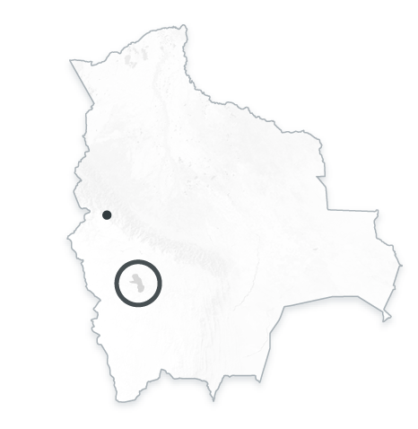
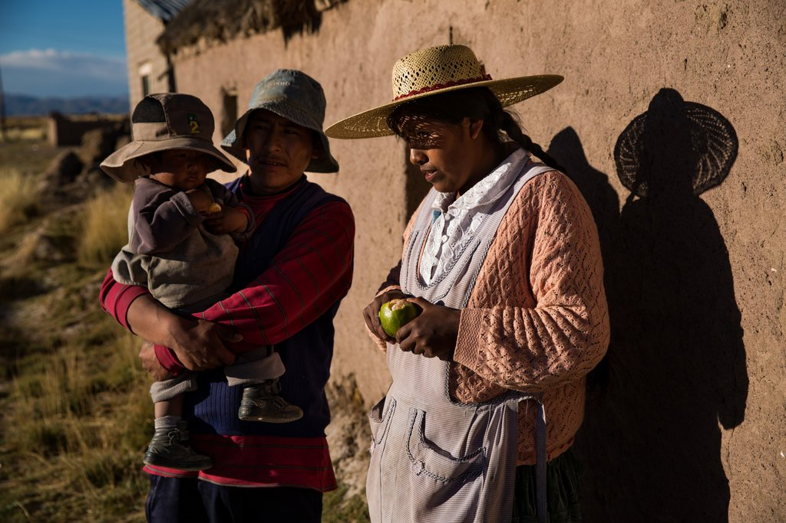

Climate Change Claims a Lake, and an Identity
Text by NICHOLAS CASEY
Photographs and video by JOSH HANER
The Lake Poopoó
Item suggested: Map of the area.
Adding a map of the designed area LLAPALLAPANI, Bolivia might help your audience to get a better understanding of the area you are talking about.
From google.com:
LLAPALLAPANI, Bolivia — The water receded and the fish died. They surfaced by the tens of thousands, belly-up, and the stench drifted in the air for weeks.
The birds that had fed on the fish had little choice but to abandon Lake Poopó, once Bolivia’s second-largest but now just a dry, salty expanse. Many of the Uru-Murato people, who had lived off its waters for generations, left as well, joining a new global march of refugees fleeing not war or persecution, but climate change.
“The lake was our mother and our father,” said Adrián Quispe, one of five brothers who were working as fishermen and raising families here in Llapallapani. “Without this lake, where do we go?”
Climate Change
Claims a Lake,
and an Identity
After surviving decades of water diversion and cyclical El Niño droughts in the Andes, Lake Poopó basically disappeared in December. The ripple effects go beyond the loss of livelihood for the Quispes and hundreds of other fishing families, beyond the migration of people forced to leave homes that are no longer viable.
The vanishing of Lake Poopó threatens the very identity of the Uru-Murato people, the oldest indigenous group in the area. They adapted over generations to the conquests of the Inca and the Spanish, but seem unable to adjust to the abrupt upheaval climate change has caused.
Item suggested: Evolution Graph
You mention data, specific to a period: 2014 and 200 miles, adding a table might catch your audience attention.
Only 636 Uru-Murato are estimated to remain in Llapallapani and two nearby villages. Since the fish died off in 2014, scores have left to work in lead mines or salt flats up to 200 miles away; those who stayed behind scrape by as farmers or otherwise survive on what used to be the shore.
Emilio Huanaco
+ 2 images
Emilio Huanaco, an indigenous judicial official, is down to his last bottles of flamingo fat, used for centuries to alleviate arthritis. He has never used medication for his aching knee.
Eva Choque, 33, sat next to her adobe home drying meat for the first time on a clothesline. She and her four children ate only fish before.